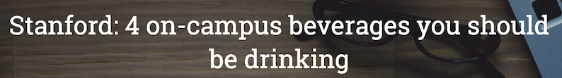
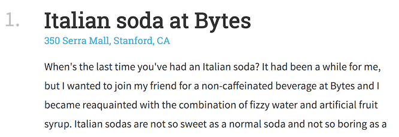

In this homework, you will be practicing the HTML and CSS that we learned in lecture.
For Part 1, you are given screenshots and a description of a specific web page to replicate. You will recreate the web page exactly as shown in the provided screenshots.
For Part 2, you will create your own list-based article with any styling you’d like.
Part 1: Beverage Listicle: listicle.html
A listicle is a somewhat trendy type of article that uses a list as its thematic structure.
For Part 1, you will create a listicle web page that describes the “4 on-campus beverages you should be drinking” at Stanford. You should create the web page in listicle.html with styles defined in listicle-style.css.
1. Overall appearance
Here is a miniature screenshot of the website you need recreate in this homework:

A full-size screenshot of the entire page (with a screen width of 1280px) is linked below:
Note that you do not have to type in the contents of the page.
- The text of the article is contained within
listicle-content.txt, which is included in your Homework 1 starter code. - Copy and paste the text of
listicle-content.txtinto yourlisticle.htmlfile, then add the HTML tags necessary to style the page. - The images are also in the
images/directory of the Homework 1 starter code.
2. Section measurements

3. Font faces, sizes, and colors
Page Title: 
- The font face is
'Roboto Slab'and the fallback font isserif. - The font size is
36px. - The font weight is
normal(not bold). - The font color is
white. - The title is vertical and center aligned to the header image.
Profile Text:
- The font face is
'Source Sans Pro'and the fallback font issans-serif. - The font size is
18px. - The font weight for the author name (“Victoria Kirst”) is
bold - The font style for the last updated (“Last updated Apr 7, 2017”) is
italic. - The font color is
rgb(51, 51, 51). - The line height
24px. - The gray line under the “Last updated” line is
10pxunder the text,2pxwide, and the color is#e6e6e6.
Body Text: 
- Heading
- The font face is
'Roboto Slab'and the fallback font isserif. - The font size is
36px. - The font weight is
bold. - The number’s color is
rgba(0, 0, 0, 0.25). - The title color is
rgb(51, 51, 51).
- The font face is
- Address
- The address under the heading is a link and is described in the Links section.
- Paragraphs
- The font face is
'Source Sans Pro'and the fallback font issans-serif. - The font size is
18px. - The line height
32px. - The font color is
rgb(51, 51, 51).
- The font face is
- Recommendation
- The phrase “Recommendation:” is
bold.
- The phrase “Recommendation:” is
4. Links
Here is a description of how links should work on your page:
- Each address of the page is a link. The URL for each link is listed in
listicle-content.txt. - The link color is
#42b4d6. - The link is not bold, and the link is not underlined unless you hover over the link.
- When you hover over the link, the link becomes underlined.
- Hints:
- To remove an underline, you can use CSS property
text-decoration: none; - To add an underline, you can use CSS property
text-decoration: underline;
- To remove an underline, you can use CSS property
5. Images
- Header image
- The header is a background image (
images/header.jpg).- Note: To reference the image from the css/ folder, the path needs to be
../images/header.jpg
- Note: To reference the image from the css/ folder, the path needs to be
- The background does not repeat.
- The background’s size is set to
cover. - The background position is anchored to the
top. - Its height is
500px. - There is a semi-transparent color overlay on top of the header image, which is
rgba(0, 0, 0, .3)- Note: You can achieve this using the following CSS rule:
background-image: linear-gradient(rgba(0, 0, 0, .3), rgba(0, 0, 0, .3)), url(../images/header.jpg);
- Note: You can achieve this using the following CSS rule:
- The header is a background image (
- Profile image
- The profile image is
images/vrk.png- Note: To reference the image from the css/ folder, the path needs to be
../images/vrk.png
- Note: To reference the image from the css/ folder, the path needs to be
- Its width is
100px. - It has rounded corners with radius
100%. - It has a
whiteborder that is1pxthick.
- The profile image is
HTML and CSS style requirements
For full credit, please abide by the following:
- Use HTML and CSS we’ve learned in class. You should be able to complete this homework using HTML and CSS we’ve learned in class through lecture 6 / Apr 14. While you are not strictly forbidden from using HTML/CSS we haven’t talked about in class, if you use it incorrectly or if you make poor stylistic choices, you may be marked down.
- Do not use JavaScript. There’s no need to use JavaScript in this assignment.
- Respect Separation of Concerns. Your HTML should describe the content of your page, and your CSS should describe your page’s appearance.
- Do not use an ordered list element (
ol) to create the list layout. There’s nothing wrong with doing this, per se, but it involves some fairly esoteric CSS that we did not cover in class. We recommend you write out the numbers “1.”, “2.”, etc. in the HTML instead of usingol. - Follow the best practices that were described in lecture and in the mini-homework.
- Reduce redundancy in CSS. Try not to have too many redundant styles, if there are ways to use inheritance or special selectors to concisely define style rules.
- Match the given appearance as closely as possible. It’s fine if your web page is off from our description by a few pixels here and there, but noticeable differences may result in a lower homework score.
- Use descriptive names, consistent spacing, and otherwise follow good code hygiene.
Part 2: Your Listicle: my-list.html
Design your own listicle! You should write the content in my-list.html and the style in my-list-style.css.
For full credit, please abide by the following:
- Cannot be an exact line-for-line copy of
listicle.html - Must have at least 3 items in your list
- Must correctly use
display: flexat least once. - You can, but do not have to, refer to
listicle-style.css.
You can spend as much or as little time on this part as you want, provided that your page does fall within the guidelines above.
Ideas
- “Parallax” Effect: This is a trendy style where the background of a page is moved at a different speed than the foreground content while scrolling. In its simplest form, the background image stays in the same place as the page scrolls. Try implementing the parallax effect using CSS! You can check out this W3Schools demo to see how it works. Inspect the elements to see what CSS they use to get this effect.
- Note: The example linked above is simple but not actually best practice. You can check out this article to try a more sophisticated implementation.
- CSS animations: When the real Squarespace demo loads, notice how the text animates in. We haven’t talked about how to do that yet. We will talk about CSS animations in class in a few weeks, but if you want to get a head start, try experimenting with some CSS animations on your page.
Submit
Upload your completed homework in the uploadzone of smartschool